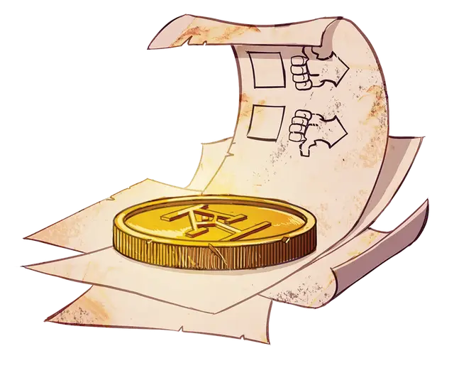

Монета принятия решений
Coin of Decisionry
Чудесный предмет, редкость варьируется (2-й ранг - обычный, 3-й ранг - необычный)

При получении 2-го ранга, ваша Монета принятия решений становится обычным магическим предметом. Когда вы подбрасываете монету, она всегда приземляется эмблемой «Acquisitions Incorporated» вниз, а на лицевой стороне «решки» появляется сообщение. Бросьте к4 по следующей таблице, чтобы определить сообщение.
| к4 | Решение |
| 1 | Выгода |
| 2 | Привлекательный бренд |
| 3 | Неопределенность |
| 4 | Разорение |
Монета не имеет абсолютно никаких прорицательных свойств, а её результаты при использовании случайны. Но кроме вас никто этого не знает. Когда существо в пределах 10 футов от вас подбрасывает монету (после того, как её мощные прогностические способности были должным образом разъяснены), вы можете использовать свою силу мысли и бонусным действием контролировать её работу, выбирая результат, который появляется после того, как она приземляется, как средство мягкого принуждения пользователя к определенному курсу действий. Существо, подбрасывающее монету, может обнаружить вашу манипуляцию с помощью успешной проверки Мудрости (Проницательность) Сл 13.
Лучший вариант. При получении 3-го ранга, ваша Монета принятия решений получает немного реальной силы прорицания и становится необычным магическим предметом. В дополнение к своему обычному свойству, вы можете использовать Действие, чтобы дважды подбросить Монету принятия решений, обдумывая конкретный план или цель, запоминая оба случайных результата. Если вы преуспеете в проверке Интеллекта (Магия) Сл 15, вы узнаете, какой из двух результатов лучше применим к вашей ситуации. Это свойство монеты не может быть использовано снова до следующего рассвета.